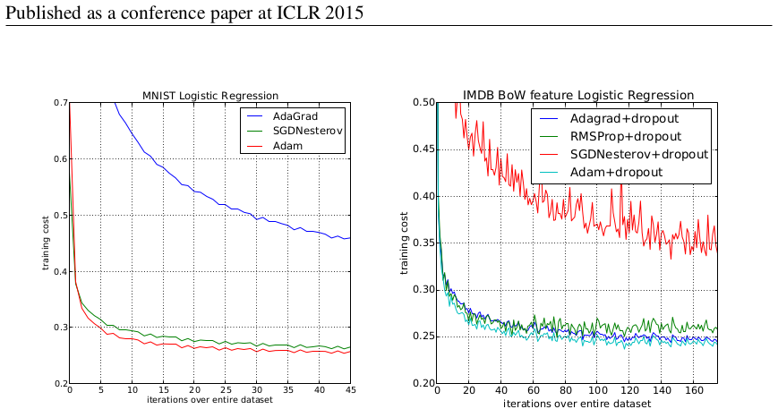
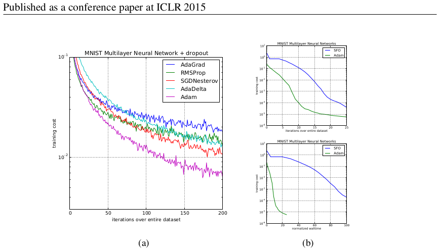
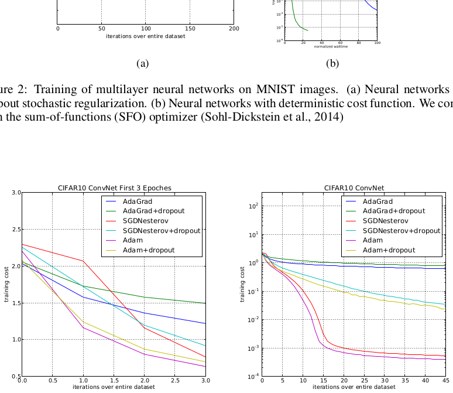
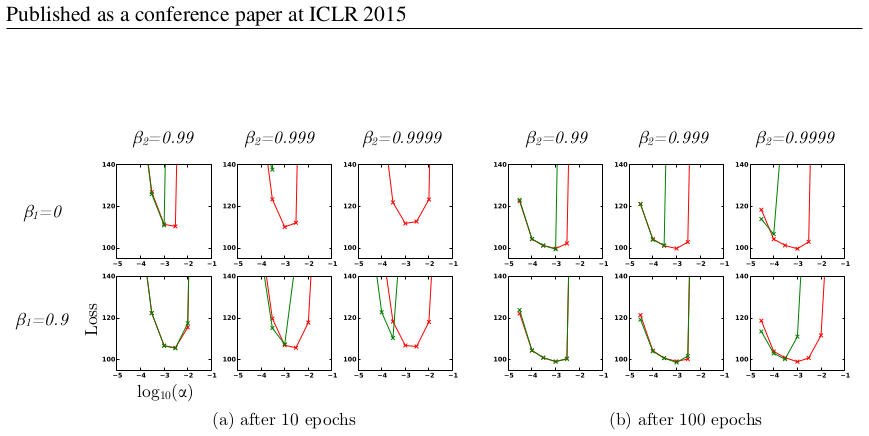

我们提出 Adam，一种用于随机目标函数一阶梯度优化的算法，它基于对低阶矩的自适应估计。该方法实现直接、计算高效、内存需求小，对梯度的对角缩放具有不变性，并且非常适合数据和/或参数规模很大的问题。该方法也适用于非平稳目标以及梯度噪声很大和/或稀疏的问题。其超参数具有直观解释，通常只需很少的调参。本文还讨论了 Adam 与相关算法之间的联系，并分析了算法的理论收敛性质，给出了在在线凸优化框架下与已知最佳结果相当的收敛速率遗憾界。实证结果表明，Adam 在实践中表现良好，并优于其他随机优化方法。最后，我们讨论了 AdaMax，一种基于无穷范数的 Adam 变体。
基于随机梯度的优化在许多科学与工程领域具有核心实践重要性。这些领域中的许多问题可以转化为某个标量参数化目标函数的优化问题，需要相对于其参数进行最大化或最小化。如果函数相对于参数可微，梯度下降是一种相对高效的优化方法，因为计算所有参数的一阶偏导数的计算复杂度与仅仅评估函数相同。目标函数常常是随机的。例如，许多目标函数由在不同数据子样本上评估的子函数之和构成；在这种情况下，通过相对于单个子函数采取梯度步骤，即随机梯度下降（SGD）或上升，可以使优化更高效。SGD 已被证明是一种高效且有效的优化方法，是许多机器学习成功故事的核心，例如深度学习的近期进展（Deng 等，2013；Krizhevsky 等，2012；Hinton & Salakhutdinov，2006；Hinton 等，2012a；Graves 等，2013）。目标函数也可能有数据子采样之外的噪声来源，例如 dropout（Hinton 等，2012b）正则化。对于所有这类带噪目标，需要高效的随机优化技术。本文关注高维参数空间中的随机目标优化。在这些情况下，高阶优化方法并不适合，本文的讨论将限于一阶方法。
我们提出 Adam，一种高效的随机优化方法，它只需要一阶梯度且内存需求很小。该方法根据梯度的一阶矩和二阶矩估计，为不同参数计算各自的自适应学习率；Adam 这一名称来自 adaptive moment estimation（自适应矩估计）。我们的方法旨在结合两种近期流行方法的优势：AdaGrad（Duchi 等，2011）在稀疏梯度上表现良好，RMSProp（Tieleman & Hinton，2012）在在线和非平稳设置中表现良好；与这些方法及其他随机优化方法的重要联系将在第 5 节阐明。Adam 的一些优点是：参数更新的幅度对梯度缩放具有不变性；其步长近似受步长超参数约束；它不要求目标函数平稳；它适用于稀疏梯度；并且它自然地执行一种步长退火。
算法 1 Adam
Require: α：步长
Require: β1, β2 ∈ [0,1)：矩估计的指数衰减率
Require: f(θ)：带参数 θ 的随机目标函数
Require: θ0：初始参数向量
m0 ← 0 （初始化一阶矩向量）
v0 ← 0 （初始化二阶矩向量）
t ← 0 （初始化时间步）
while θt 未收敛 do
t ← t + 1
gt ← ∇θ ft(θt−1) （在时间步 t 获取随机目标对 θ 的梯度）
mt ← β1 · mt−1 + (1 − β1) · gt （更新有偏一阶矩估计）
vt ← β2 · vt−1 + (1 − β2) · gt² （更新有偏二阶原始矩估计）
m̂t ← mt / (1 − β1^t) （计算偏差校正后的一阶矩估计）
v̂t ← vt / (1 − β2^t) （计算偏差校正后的二阶原始矩估计）
θt ← θt−1 − α · m̂t / (√v̂t + ε) （更新参数）
end while
return θt （所得参数）
第 2 节描述算法及其更新规则的性质。第 3 节解释我们的初始化偏差校正技术，第 4 节给出 Adam 在在线凸规划中的收敛性理论分析。实证上，如第 6 节所示，我们的方法在各种模型和数据集上始终优于其他方法。总体而言，我们表明 Adam 是一种通用算法，可扩展到大规模高维机器学习问题。
我们提出的 Adam 算法伪代码见算法 1。令 \(f(\theta)\) 为带噪目标函数：一个相对于参数 \(\theta\) 可微的随机标量函数。我们希望相对于参数 \(\theta\) 最小化该函数的期望值 \(\mathbb{E}[f(\theta)]\)。用 \(f_1(\theta),\ldots,f_T(\theta)\) 表示随机函数在后续时间步 \(1,\ldots,T\) 的实现。随机性可能来自对数据点随机子样本（小批量）的评估，也可能来自函数固有噪声。用 \(g_t=\nabla_\theta f_t(\theta)\) 表示梯度，即 \(f_t\) 相对于 \(\theta\) 在时间步 \(t\) 评估的偏导数向量。
该算法更新梯度的一阶指数移动平均 \((m_t)\) 和梯度平方的指数移动平均 \((v_t)\)，其中超参数 \(\beta_1,\beta_2\in[0,1)\) 控制这些移动平均的指数衰减率。这些移动平均本身是梯度一阶矩（均值）和二阶原始矩（未中心化方差）的估计。然而，这些移动平均被初始化为 0（向量），导致矩估计偏向零，尤其是在初始时间步，且衰减率较小时（即 \(\beta\) 接近 1）尤为明显。好消息是，这种初始化偏差可以很容易抵消，得到偏差校正后的估计 \(\hat{m}_t\) 和 \(\hat{v}_t\)。更多细节见第 3 节。
注意，算法 1 的效率可以通过改变计算顺序来提高，但会牺牲清晰性。例如，可将循环中最后三行替换为：\(\alpha_t=\alpha\cdot\sqrt{1-\beta_2^t}/(1-\beta_1^t)\) 和 \(\theta_t\leftarrow\theta_{t-1}-\alpha_t\cdot m_t/(\sqrt{v_t}+\hat{\epsilon})\)。
Adam 更新规则的一个重要性质是其对步长的谨慎选择。假设 \(\epsilon=0\)，在时间步 \(t\) 参数空间中采取的有效步长为 \(\Delta_t=\alpha\cdot\hat{m}_t/\sqrt{\hat{v}_t}\)。有效步长有两个上界：当 \((1-\beta_1)>\sqrt{1-\beta_2}\) 时，\(|\Delta_t|\le\alpha\cdot(1-\beta_1)/\sqrt{1-\beta_2}\)；否则 \(|\Delta_t|\le\alpha\)。
第一种情况只会在最严重的稀疏情形中发生：梯度在除当前时间步以外的所有时间步都为零。对于较不稀疏的情况，有效步长会更小。当 \((1-\beta_1)=\sqrt{1-\beta_2}\) 时，有 \(|\hat{m}_t/\sqrt{\hat{v}_t}|<1\)，因此 \(|\Delta_t|<\alpha\)。在更常见的情形中，\(\hat{m}_t/\sqrt{\hat{v}_t}\approx\pm1\)，因为 \(|\mathbb{E}[g]/\sqrt{\mathbb{E}[g^2]}|\le1\)。每个时间步在参数空间中采取的有效步长大小近似受步长设置 \(\alpha\) 约束，即 \(|\Delta_t|\lessapprox\alpha\)。这可以理解为在当前参数值周围建立一个信赖域，超出该区域时当前梯度估计不能提供足够信息。这通常使提前知道 \(\alpha\) 的合理尺度变得容易。例如，对于许多机器学习模型，我们常常事先知道，高概率下良好最优解位于参数空间的某个集合内；例如，对参数有先验分布并不罕见。由于 \(\alpha\) 设定了参数空间中步长大小的上界，我们可以据此推断从 \(\theta_0\) 经过若干次迭代可到达的最优解的大致数量级。稍作术语滥用，我们将比值 \(\hat{m}_t/\sqrt{\hat{v}_t}\) 称为信噪比（SNR）。SNR 较小时，有效步长 \(\Delta_t\) 会更接近零。这是一个理想性质，因为较小的 SNR 意味着关于 \(\hat{m}_t\) 的方向是否对应真实梯度方向存在更大不确定性。例如，SNR 值在接近最优解时通常会趋近于 0，导致参数空间中的有效步长变小：这是一种自动退火形式。有效步长 \(\Delta_t\) 还对梯度的尺度不变；将梯度 \(g\) 缩放 \(c\) 倍会使 \(\hat{m}_t\) 缩放 \(c\) 倍，使 \(\hat{v}_t\) 缩放 \(c^2\) 倍，二者抵消：\((c\cdot\hat{m}_t)/(\sqrt{c^2\cdot\hat{v}_t})=\hat{m}_t/\sqrt{\hat{v}_t}\)。
如第 2 节所述，Adam 使用初始化偏差校正项。这里我们推导二阶矩估计的项；一阶矩的推导完全类似。令 \(g\) 为随机目标 \(f\) 的梯度，我们希望用梯度平方的指数移动平均来估计其二阶原始矩（未中心化方差），衰减率为 \(\beta_2\)。令 \(g_1,\ldots,g_T\) 为后续时间步的梯度，每个都是从底层梯度分布 \(g_t\sim p(g_t)\) 中抽取的样本。我们像之前一样将指数移动平均初始化为 \(v_0=0\)（零向量）。首先注意，时间步 \(t\) 的指数移动平均更新 \(v_t=\beta_2\cdot v_{t-1}+(1-\beta_2)\cdot g_t^2\)（其中 \(g_t^2\) 表示逐元素平方 \(g_t\odot g_t\)）可以写成所有先前时间步梯度的函数：
我们希望知道 \(\mathbb{E}[v_t]\)，即时间步 \(t\) 指数移动平均的期望值，与真实二阶矩 \(\mathbb{E}[g_t^2]\) 的关系，从而校正二者之间的差异。对式（1）左右两边取期望：
其中，如果真实二阶矩 \(\mathbb{E}[g_t^2]\) 是平稳的，则 \(\zeta=0\)；否则 \(\zeta\) 可以保持很小，因为指数衰减率 \(\beta_1\)（原文如此，应为 \(\beta_2\)）可以选择得（也应该选择得）使指数移动平均对过于久远的梯度赋予较小权重。剩下的是项 \((1-\beta_2^t)\)，它是由将运行平均初始化为零造成的。在算法 1 中，我们因此除以该项来校正初始化偏差。
对于稀疏梯度，为了可靠估计二阶矩，需要对许多梯度取平均，即选择较小的 \(\beta_2\) 值；然而，正是在这种较小 \(\beta_2\) 的情况下，如果不进行初始化偏差校正，会导致初始步长大得多。
我们使用 Zinkevich（2003）提出的在线学习框架分析 Adam 的收敛性。给定任意未知的凸代价函数序列 \(f_1(\theta),f_2(\theta),\ldots,f_T(\theta)\)。在每个时间 \(t\)，我们的目标是预测参数 \(\theta_t\)，并在先前未知的代价函数 \(f_t\) 上评估它。由于序列性质事先未知，我们使用遗憾（regret）评估算法，即在线预测 \(f_t(\theta_t)\) 与来自可行集 \(\mathcal{X}\) 的最佳固定点参数 \(f_t(\theta^*)\) 之间在所有先前步骤上的差值之和。具体地，遗憾定义为：
其中 \(\theta^*=\arg\min_{\theta\in\mathcal{X}}\sum_{t=1}^{T}f_t(\theta)\)。我们证明 Adam 具有 \(O(\sqrt{T})\) 遗憾界，证明见附录。我们的结果与这一一般凸在线学习问题已知最佳界相当。我们还使用一些定义简化记号，其中 \(g_t\triangleq\nabla f_t(\theta_t)\)，\(g_{t,i}\) 为第 \(i\) 个元素。定义 \(g_{1:t,i}\in\mathbb{R}^t\) 为包含截至 \(t\) 所有迭代中第 \(i\) 维梯度的向量：\(g_{1:t,i}=[g_{1,i},g_{2,i},\ldots,g_{t,i}]\)。另外定义 \(\gamma\triangleq\frac{\beta_1^2}{\sqrt{\beta_2}}\)。以下定理在学习率 \(\alpha_t\) 以 \(t^{-1/2}\) 速率衰减、一阶矩运行平均系数 \(\beta_{1,t}\) 以 \(\lambda\) 指数衰减时成立，\(\lambda\) 通常接近 1，例如 \(1-10^{-8}\)。
定理 4.1. 假设函数 \(f_t\) 具有有界梯度，\(\|\nabla f_t(\theta)\|_2\le G\)，\(\|\nabla f_t(\theta)\|_\infty\le G_\infty\) 对所有 \(\theta\in\mathbb{R}^d\) 成立；Adam 生成的任意 \(\theta_t\) 之间距离有界，\(\|\theta_n-\theta_m\|_2\le D\)，\(\|\theta_m-\theta_n\|_\infty\le D_\infty\) 对任意 \(m,n\in\{1,\ldots,T\}\) 成立；且 \(\beta_1,\beta_2\in[0,1)\) 满足 \(\frac{\beta_1^2}{\sqrt{\beta_2}}<1\)。令 \(\alpha_t=\frac{\alpha}{\sqrt{t}}\)，\(\beta_{1,t}=\beta_1\lambda^{t-1}\)，\(\lambda\in(0,1)\)。则 Adam 对任意 \(T\ge1\) 具有以下保证：
定理 4.1 意味着，当数据特征稀疏且梯度有界时，求和项可能远小于其上界 \(\sum_{i=1}^{d}\|g_{1:T,i}\|_2\ll dG_\infty\sqrt{T}\) 和 \(\sum_{i=1}^{d}\sqrt{T\bar{\nu}_{T,i}}\ll dG_\infty\sqrt{T}\)，特别是当函数类和数据特征属于 Duchi 等（2011）第 1.2 节的形式时。他们关于期望值 \(\mathbb{E}[\sum_{i=1}^{d}\|g_{1:T,i}\|_2]\) 的结果也适用于 Adam。特别地，Adam 和 AdaGrad 等自适应方法可以达到 \(O(\log d\sqrt{T})\)，优于非自适应方法的 \(O(\sqrt{dT})\)。将 \(\beta_{1,t}\) 衰减到零在我们的理论分析中很重要，也与先前的实证发现一致；例如 Sutskever 等（2013）建议在训练末期降低动量系数可以改善收敛。
最后，我们可以证明 Adam 的平均遗憾收敛：
推论 4.2. 假设函数 \(f_t\) 具有有界梯度，\(\|\nabla f_t(\theta)\|_2\le G\)，\(\|\nabla f_t(\theta)\|_\infty\le G_\infty\) 对所有 \(\theta\in\mathbb{R}^d\) 成立；Adam 生成的任意 \(\theta_t\) 之间距离有界，\(\|\theta_n-\theta_m\|_2\le D\)，\(\|\theta_m-\theta_n\|_\infty\le D_\infty\) 对任意 \(m,n\in\{1,\ldots,T\}\) 成立。则 Adam 对任意 \(T\ge1\) 具有以下保证：
该结果可由定理 4.1 和 \(\sum_{i=1}^{d}\|g_{1:T,i}\|_2\le dG_\infty\sqrt{T}\) 得到。因此，\(\lim_{T\to\infty}\frac{R(T)}{T}=0\)。
与 Adam 直接相关的优化方法是 RMSProp（Tieleman & Hinton，2012；Graves，2013）和 AdaGrad（Duchi 等，2011）；下面讨论这些关系。其他随机优化方法包括 vSGD（Schaul 等，2012）、AdaDelta（Zeiler，2012）以及 Roux & Fitzgibbon（2010）的自然牛顿法，它们都通过从一阶信息估计曲率来设置步长。Sum-of-Functions Optimizer（SFO）（Sohl-Dickstein 等，2014）是一种基于小批量的拟牛顿方法，但与 Adam 不同，其内存需求与数据集的小批量划分数量成线性关系，这在 GPU 等内存受限系统上通常不可行。与自然梯度下降（NGD）（Amari，1998）类似，Adam 采用一种适应数据几何的预条件子，因为 \(\hat{v}_t\) 是 Fisher 信息矩阵对角线（Pascanu & Bengio，2013）的近似；然而，Adam 的预条件子（像 AdaGrad 的预条件子一样）通过使用对角 Fisher 信息矩阵近似之逆的平方根进行预条件，其自适应比原始 NGD 更保守。
RMSProp：与 Adam 密切相关的优化方法是 RMSProp（Tieleman & Hinton，2012）。有时使用带动量版本（Graves，2013）。带动量的 RMSProp 与 Adam 之间有几个重要区别：带动量的 RMSProp 使用缩放梯度的动量生成参数更新，而 Adam 的更新直接使用梯度一阶矩和二阶矩的运行平均来估计。RMSProp 也缺少偏差校正项；当 \(\beta_2\) 接近 1（稀疏梯度所需）时，这一点最重要，因为在这种情况下不校正偏差会导致非常大的步长，并经常发散，我们在第 6.4 节也通过实证展示了这一点。
AdaGrad：AdaGrad（Duchi 等，2011）是一种在稀疏梯度上表现良好的算法。其基本版本将参数更新为 \(\theta_{t+1}=\theta_t-\alpha\cdot g_t/\sqrt{\sum_{i=1}^{t}g_t^2}\)。注意，如果我们选择 \(\beta_2\) 从下方无限接近 1，则 \(\lim_{\beta_2\to1}\hat{v}_t=t^{-1}\cdot\sum_{i=1}^{t}g_t^2\)。AdaGrad 对应于 Adam 的一个版本，其中 \(\beta_1=0\)，\((1-\beta_2)\) 无穷小，并将 \(\alpha\) 替换为退火版本 \(\alpha_t=\alpha\cdot t^{-1/2}\)，即 \(\theta_t-\alpha\cdot t^{-1/2}\cdot\hat{m}_t/\sqrt{\lim_{\beta_2\to1}\hat{v}_t}=\theta_t-\alpha\cdot t^{-1/2}\cdot g_t/\sqrt{t^{-1}\cdot\sum_{i=1}^{t}g_t^2}=\theta_t-\alpha\cdot g_t/\sqrt{\sum_{i=1}^{t}g_t^2}\)。注意，当移除偏差校正项时，Adam 与 AdaGrad 之间的这种直接对应关系不成立；如果没有偏差校正，如 RMSProp，\(\beta_2\) 无限接近 1 会导致无限大的偏差和无限大的参数更新。
为了实证评估所提出的方法，我们研究了不同的流行机器学习模型，包括逻辑回归、多层全连接神经网络和深度卷积神经网络。使用大型模型和数据集，我们证明 Adam 能够高效解决实际深度学习问题。
在比较不同优化算法时，我们使用相同的参数初始化。学习率和动量等超参数在密集网格上搜索，并使用最佳超参数设置报告结果。
我们在 MNIST 数据集上使用 L2 正则化的多类逻辑回归评估所提出的方法。逻辑回归具有研究充分的凸目标，适合在不用担心局部最小值问题的情况下比较不同优化器。逻辑回归实验中的步长 \(\alpha\) 通过 \(1/\sqrt{t}\) 衰减调整，即 \(\alpha_t=\frac{\alpha}{\sqrt{t}}\)，这与第 4 节的理论预测一致。逻辑回归直接在 784 维图像向量上分类类别标签。我们将 Adam 与带 Nesterov 动量的加速 SGD 和 Adagrad 进行比较，小批量大小为 128。根据图 1，我们发现 Adam 的收敛与带动量的 SGD 相似，二者都比 Adagrad 收敛更快。
如 Duchi 等（2011）所讨论，Adagrad 的主要理论结果之一是能够高效处理稀疏特征和梯度，而 SGD 在学习稀有特征方面较弱。步长按 \(1/\sqrt{t}\) 衰减的 Adam 理论上应与 Adagrad 性能匹配。我们使用 Maas 等（2011）的 IMDB 电影评论数据集检查稀疏特征问题。我们将 IMDB 电影评论预处理为词袋（BoW）特征向量，包括前 10,000 个最频繁词。每条评论的 10,000 维 BoW 特征向量高度稀疏。如 Wang & Manning（2013）所建议，训练期间可对 BoW 特征应用 50% dropout 噪声以防止过拟合。在图 1 中，无论有无 dropout 噪声，Adagrad 都大幅优于带 Nesterov 动量的 SGD。Adam 的收敛速度与 Adagrad 一样快。Adam 的实证表现与第 2 节和第 4 节的理论发现一致。与 Adagrad 类似，Adam 可以利用稀疏特征，并获得比普通带动量 SGD 更快的收敛速度。

多层神经网络是具有非凸目标函数的强大模型。尽管我们的收敛分析不适用于非凸问题，但我们实证发现 Adam 在此类情况下通常优于其他方法。在实验中，我们做出的模型选择与该领域先前发表工作一致；使用具有两个全连接隐藏层、每层 1000 个隐藏单元和 ReLU 激活的神经网络模型，小批量大小为 128。
首先，我们使用标准确定性交叉熵目标函数，并对参数施加 \(L_2\) 权重衰减以防止过拟合，研究不同优化器。Sum-of-Functions（SFO）方法（Sohl-Dickstein 等，2014）是一种最近提出的拟牛顿方法，适用于小批量数据，并在多层神经网络优化上表现出良好性能。我们使用其实现，并与 Adam 比较来训练此类模型。图 2 显示，Adam 在迭代次数和墙钟时间上都取得更快进展。由于更新曲率信息的成本，SFO 每次迭代比 Adam 慢 5—10 倍，并且其内存需求与小批量数量成线性关系。
随机正则化方法（如 dropout）是防止过拟合的有效方式，因其简单而常用于实践。SFO 假设确定性替换，因此在带随机正则化的代价函数上确实无法收敛。我们在带 dropout 噪声训练的多层神经网络上比较 Adam 与其他随机一阶方法的有效性。图 2 显示我们的结果；Adam 比其他方法收敛更好。

具有多层卷积、池化和非线性单元的卷积神经网络（CNN）在计算机视觉任务中取得了相当大的成功。与大多数全连接神经网络不同，CNN 中的权重共享导致不同层的梯度差异很大。在实践中应用 SGD 时，卷积层通常使用较小的学习率。我们展示 Adam 在深度 CNN 中的有效性。我们的 CNN 架构具有三个交替阶段：5×5 卷积滤波器和步长为 2 的 3×3 最大池化，随后是一个具有 1000 个修正线性隐藏单元（ReLU）的全连接层。输入图像经过白化预处理，并对输入层和全连接层应用 dropout 噪声。小批量大小也设为 128，与先前实验类似。
有趣的是，尽管 Adam 和 Adagrad 在训练初期都快速降低代价（图 3 左），但对于 CNN，Adam 和 SGD 最终收敛速度显著快于 Adagrad（图 3 右）。我们注意到，二阶矩估计 \(\hat{v}_t\) 在几个 epoch 后消失为零，并被算法 1 中的 \(\epsilon\) 主导。因此，与第 6.2 节的全连接网络相比，二阶矩估计对 CNN 代价函数几何的近似较差。而通过一阶矩降低小批量方差在 CNN 中更重要，并有助于加速。因此，在这个特定实验中，Adagrad 收敛得比其他方法慢得多。尽管 Adam 相对带动量 SGD 只显示出边际改进，但它为不同层自适应调整学习率尺度，而不是像 SGD 那样手动挑选。

我们还实证评估第 2 节和第 3 节解释的偏差校正项的效果。如第 5 节所讨论，移除偏差校正项会得到带动量的 RMSProp（Tieleman & Hinton，2012）版本。我们在训练变分自编码器（VAE）（Kingma & Welling，2013）时改变 \(\beta_1\) 和 \(\beta_2\)，架构与 Kingma & Welling（2013）相同：单隐藏层 500 个隐藏单元，softplus 非线性，50 维球面高斯潜变量。我们遍历广泛的超参数选择，即 \(\beta_1\in[0,0.9]\)、\(\beta_2\in[0.99,0.999,0.9999]\)、\(\log_{10}(\alpha)\in[-5,\ldots,-1]\)。对稀疏梯度鲁棒性所需的 \(\beta_2\) 接近 1 会导致更大的初始化偏差；因此我们预期偏差校正项在这种慢衰减情况下很重要，可防止对优化产生不利影响。
在图 4 中，当没有偏差校正项时，\(\beta_2\) 接近 1 确实导致训练不稳定，尤其是在训练最初几个 epoch。最佳结果在较小的 \((1-\beta_2)\) 值和偏差校正下取得；这在优化末期更明显，此时随着隐藏单元专门化到特定模式，梯度往往变得更稀疏。总之，无论超参数设置如何，Adam 的表现等于或优于 RMSProp。

在 Adam 中，单个权重的更新规则是将其梯度按与其当前及过去梯度（缩放）\(L^2\) 范数成反比的方式缩放。我们可以将基于 \(L^2\) 范数的更新规则推广为基于 \(L^p\) 范数的更新规则。当 \(p\) 很大时，这类变体在数值上变得不稳定。然而，在令 \(p\to\infty\) 的特殊情况下，会出现一个令人惊讶地简单且稳定的算法；见算法 2。现在推导该算法。在 \(L^p\) 范数情况下，令时间 \(t\) 的步长与 \(v_t^{1/p}\) 成反比，其中：
算法 2 AdaMax
Require: α：步长
Require: β1, β2 ∈ [0,1)：指数衰减率
Require: f(θ)：带参数 θ 的随机目标函数
Require: θ0：初始参数向量
m0 ← 0 （初始化一阶矩向量）
u0 ← 0 （初始化指数加权无穷范数）
t ← 0 （初始化时间步）
while θt 未收敛 do
t ← t + 1
gt ← ∇θ ft(θt−1) （在时间步 t 获取随机目标对 θ 的梯度）
mt ← β1 · mt−1 + (1 − β1) · gt （更新有偏一阶矩估计）
ut ← max(β2 · ut−1, |gt|) （更新指数加权无穷范数）
θt ← θt−1 − (α / (1 − β1^t)) · mt / ut （更新参数）
end while
return θt （所得参数）
注意，这里的衰减项等价地参数化为 \(\beta_2^p\) 而不是 \(\beta_2\)。现在令 \(p\to\infty\)，并定义 \(u_t=\lim_{p\to\infty}(v_t)^{1/p}\)，则：
这对应于极其简单的递归公式：
初始值 \(u_0=0\)。注意，方便的是，在这种情况下我们不需要校正初始化偏差。还要注意，AdaMax 的参数更新幅度比 Adam 有更简单的界，即：\(|\Delta_t|\le\alpha\)。
由于随机近似，最后一次迭代是有噪声的，通常通过对参数取平均可获得更好的泛化性能。此前 Moulines & Bach（2011）已表明 Polyak-Ruppert 平均（Polyak & Juditsky，1992；Ruppert，1988）可以改善标准 SGD 的收敛，其中 \(\bar{\theta}_t=\frac{1}{t}\sum_{k=1}^{n}\theta_k\)。或者，可以对参数使用指数移动平均，给予近期参数值更高权重。这可以通过在算法 1 和 2 的内层循环中添加一行轻松实现：\(\bar{\theta}_t\leftarrow\beta_2\cdot\bar{\theta}_{t-1}+(1-\beta_2)\theta_t\)，其中 \(\bar{\theta}_0=0\)。初始化偏差可以再次通过估计器 \(\hat{\theta}_t=\bar{\theta}_t/(1-\beta_2^t)\) 校正。
我们介绍了一种简单且计算高效的算法，用于随机目标函数的基于梯度的优化。我们的方法面向具有大型数据集和/或高维参数空间的机器学习问题。该方法结合了两种近期流行优化方法的优势：AdaGrad 处理稀疏梯度的能力，以及 RMSProp 处理非平稳目标的能力。该方法实现直接且内存需求小。实验证实了关于凸问题收敛速率的分析。总体而言，我们发现 Adam 稳健且非常适合机器学习领域中广泛的非凸优化问题。
如果没有 Google Deepmind 的支持，本文可能不会存在。我们特别感谢 Ivo Danihelka 和 Tom Schaul 创造了 Adam 这个名字。感谢杜克大学的 Kai Fan 发现原始 AdaMax 推导中的一个错误。本工作的一部分实验在 SURF 基金会支持下于荷兰国家电子基础设施上进行。Diederik Kingma 由 Google European Doctorate Fellowship in Deep Learning 支持。
Amar, Shun-Ichi. Natural gradient works efficiently in learning. Neural computation, 10(2):251–276, 1998.
Deng, Li, Li, Jinyu, Huang, Jui-Ting, Yao, Kaisheng, Yu, Dong, Seide, Frank, Seltzer, Michael, Zweig, Geoff, He, Xiaodong, Williams, Jason, et al. Recent advances in deep learning for speech research at microsoft. ICASSP 2013, 2013.
Duchi, John, Hazan, Elad, and Singer, Yoram. Adaptive subgradient methods for online learning and stochastic optimization. The Journal of Machine Learning Research, 12:2121–2159, 2011.
Graves, Alex. Generating sequences with recurrent neural networks. arXiv preprint arXiv:1308.0850, 2013.
Graves, Alex, Mohamed, Abdel-rahman, and Hinton, Geoffrey. Speech recognition with deep recurrent neural networks. In Acoustics, Speech and Signal Processing (ICASSP), 2013 IEEE International Conference on, pp. 6645–6649. IEEE, 2013.
Hinton, G.E. and Salakhutdinov, R.R. Reducing the dimensionality of data with neural networks. Science, 313(5786):504–507, 2006.
Hinton, Geoffrey, Deng, Li, Yu, Dong, Dahl, George E, Mohamed, Abdel-rahman, Jaitly, Navdeep, Senior, Andrew, Vanhoucke, Vincent, Nguyen, Patrick, Sainath, Tara N, et al. Deep neural networks for acoustic modeling in speech recognition: The shared views of four research groups. Signal Processing Magazine, IEEE, 29(6):82–97, 2012a.
Hinton, Geoffrey E, Srivastava, Nitish, Krizhevsky, Alex, Sutskever, Ilya, and Salakhutdinov, Ruslan R. Improving neural networks by preventing co-adaptation of feature detectors. arXiv preprint arXiv:1207.0580, 2012b.
Kingma, Diederik P and Welling, Max. Auto-Encoding Variational Bayes. In The 2nd International Conference on Learning Representations (ICLR), 2013.
Krizhevsky, Alex, Sutskever, Ilya, and Hinton, Geoffrey E. Imagenet classification with deep convolutional neural networks. In Advances in neural information processing systems, pp. 1097–1105, 2012.
Maas, Andrew L, Daly, Raymond E, Pham, Peter T, Huang, Dan, Ng, Andrew Y, and Potts, Christopher. Learning word vectors for sentiment analysis. In Proceedings of the 49th Annual Meeting of the Association for Computational Linguistics: Human Language Technologies-Volume 1, pp. 142–150. Association for Computational Linguistics, 2011.
Moulines, Eric and Bach, Francis R. Non-asymptotic analysis of stochastic approximation algorithms for machine learning. In Advances in Neural Information Processing Systems, pp. 451–459, 2011.
Pascanu, Razvan and Bengio, Yoshua. Revisiting natural gradient for deep networks. arXiv preprint arXiv:1301.3584, 2013.
Polyak, Boris T and Juditsky, Anatoli B. Acceleration of stochastic approximation by averaging. SIAM Journal on Control and Optimization, 30(4):838–855, 1992.
Ruppert, David. Efficient estimations from a slowly convergent robbins-monro process. Technical report, Cornell University Operations Research and Industrial Engineering, 1988.
Schaul, Tom, Zhang, Sixin, and LeCun, Yann. No more pesky learning rates. arXiv preprint arXiv:1206.1106, 2012.
Sohl-Dickstein, Jascha, Poole, Ben, and Ganguli, Surya. An adaptive learning rate for stochastic variational inference. In Proceedings of the 31st International Conference on Machine Learning, pp. 550–558, 2014.
Sutskever, Ilya, Martens, James, Dahl, George, and Hinton, Geoffrey. On the importance of initialization and momentum in deep learning. In Proceedings of the 30th international conference on machine learning (ICML-13), pp. 1139–1147, 2013.
Tieleman, Tijmen and Hinton, Geoffrey. Lecture 6.5-rmsprop: Divide the gradient by a running average of its recent magnitude. COURSERA: Neural Networks for Machine Learning, 4:2, 2012.
Wang, Sida and Manning, Christopher. Fast dropout training. In Proceedings of the 30th International Conference on Machine Learning, pp. 118–126, 2013.
Zeiler, Matthew D. ADADELTA: An adaptive learning rate method. arXiv preprint arXiv:1212.5701, 2012.
Zinkevich, Martin. Online convex programming and generalized infinitesimal gradient ascent. In Proceedings of the 20th International Conference on Machine Learning (ICML-03), pp. 928–936, 2003.
定义 10.1. 函数 \(f:\mathbb{R}^d\to\mathbb{R}\) 是凸的，如果对所有 \(x,y\in\mathbb{R}^d\) 和所有 \(\lambda\in[0,1]\)，有
另外注意，凸函数可以在其切点处由超平面下界。
引理 10.2. 如果函数 \(f:\mathbb{R}^d\to\mathbb{R}\) 是凸的，则对所有 \(x,y\in\mathbb{R}^d\)，有
上述引理可用于给遗憾取上界，我们主定理的证明通过用 Adam 更新规则替换超平面来构造。以下两个引理用于支持主定理。我们还使用一些定义简化记号，其中 \(g_t\triangleq\nabla f_t(\theta_t)\)，\(g_{t,i}\) 为第 \(i\) 个元素。定义 \(g_{1:t,i}\in\mathbb{R}^t\) 为包含截至 \(t\) 所有迭代中第 \(i\) 维梯度的向量：\(g_{1:t,i}=[g_{1,i},g_{2,i},\ldots,g_{t,i}]\)。
引理 10.3. 令 \(g_t=\nabla f_t(\theta_t)\)，\(g_{1:t}\) 如上定义且有界，\(\|g_t\|_2\le G\)，\(\|g_t\|_\infty\le G_\infty\)。则
证明. 我们对 \(T\) 使用归纳法证明该不等式。基础情况 \(T=1\)：\(\sqrt{g_{1,i}^2}\le 2G_\infty\|g_{1,i}\|_2\)。归纳步骤：
由 \(\|g_{1:T,i}\|_2^2-g_{T,i}^2+\frac{g_{T,i}^2}{4\|g_{1:T,i}\|_2^2}\ge\|g_{1:T,i}\|_2^2-g_{T,i}^2\)，两边开平方可得
整理不等式并代入 \(\sqrt{\|g_{1:T,i}\|_2^2-g_{T,i}^2}\) 项，可得
引理 10.4. 令 \(\gamma\triangleq\frac{\beta_1^2}{\sqrt{\beta_2}}\)。对于满足 \(\frac{\beta_1^2}{\sqrt{\beta_2}}<1\) 的 \(\beta_1,\beta_2\in[0,1)\) 和有界 \(g_t\)，\(\|g_t\|_2\le G\)，\(\|g_t\|_\infty\le G_\infty\)，以下不等式成立：
证明概述. 在假设下，\(\frac{\sqrt{1-\beta_2^2}}{(1-\beta_1^2)^2}\le\frac{1}{(1-\beta_1)^2}\)。利用算法 1 的更新规则展开求和中的项，并利用算术—几何级数上界 \(\sum_t\gamma^t<\frac{1}{(1-\gamma)^2}\)，可逐项放缩。最终应用引理 10.3，得到
为简化记号，定义 \(\gamma\triangleq\frac{\beta_1^2}{\sqrt{\beta_2}}\)。直观上，以下定理在学习率 \(\alpha_t\) 以 \(t^{-1/2}\) 速率衰减、一阶矩运行平均系数 \(\beta_{1,t}\) 以 \(\lambda\) 指数衰减时成立，\(\lambda\) 通常接近 1，例如 \(1-10^{-8}\)。
定理 10.5. 假设函数 \(f_t\) 具有有界梯度，\(\|\nabla f_t(\theta)\|_2\le G\)，\(\|\nabla f_t(\theta)\|_\infty\le G_\infty\) 对所有 \(\theta\in\mathbb{R}^d\) 成立；Adam 生成的任意 \(\theta_t\) 之间距离有界，\(\|\theta_n-\theta_m\|_2\le D\)，\(\|\theta_m-\theta_n\|_\infty\le D_\infty\) 对任意 \(m,n\in\{1,\ldots,T\}\) 成立；且 \(\beta_1,\beta_2\in[0,1)\) 满足 \(\frac{\beta_1^2}{\sqrt{\beta_2}}<1\)。令 \(\alpha_t=\frac{\alpha}{\sqrt{t}}\)，\(\beta_{1,t}=\beta_1\lambda^{t-1}\)，\(\lambda\in(0,1)\)。则 Adam 对任意 \(T\ge1\) 具有以下保证：
证明概述. 利用引理 10.2，有
由算法 1 的更新规则，
关注参数向量 \(\theta_t\in\mathbb{R}^d\) 的第 \(i\) 维。减去标量 \(\theta_i^*\) 并对上述更新规则两边平方，可得
整理上式并使用 Young 不等式 \(ab\le a^2/2+b^2/2\)。还可证明 \(\sqrt{\hat{v}_{t,i}}=\sqrt{\sum_{j=1}^{t}(1-\beta_2)\beta_2^{t-j}g_{j,i}^2}/\sqrt{1-\beta_2^t}\le\|g_{1:t,i}\|_2\) 且 \(\beta_{1,t}\le\beta_1\)。然后得到 \(g_{t,i}(\theta_{t,i}-\theta_i^*)\) 的上界，并对 \(i=1,\ldots,d\) 和 \(t=1,\ldots,T\) 求和。应用引理 10.4，可得遗憾界。对最后一项使用算术—几何级数上界：
因此得到定理 10.5 中的遗憾界。
说明：本文档为所提供 PDF 内容的中文翻译版；参考文献保留英文原样。原文图已按英文本裁切嵌入。算法伪代码按原文整理为可读文本。PDF 末尾的 OCR 噪声行已忽略。